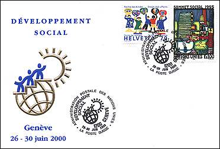
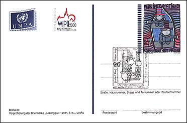
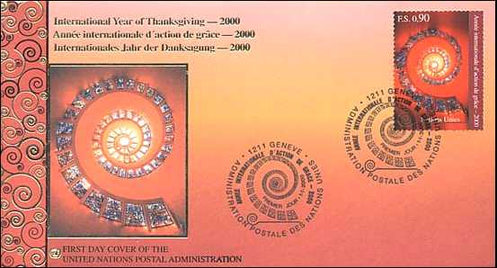
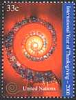
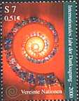

6/26-30/2000. FDC. Social Development. Swiss and UN - Geneva stamps. Joint cancel of the UN Postal Administration and of the Swiss Postal Administration. 6/2/2000. Postcard. UN -Vienna. WIPA - 2000. Hundertwasser stamps issued in 1995 is shown on both images.
 |
 |
1/1/2000. International Year of Thanksgiving - 2000. "Glory Window" from the Thanksgiving Chapel, Dallas, Texas. Artist: Gabrielle Loire, France. Three stamps, FDCs. Stamps' designer: Rorie Katz, U.S.A. Very nice.
|
 |
 |
|
 |
10/27/98. 50th Anniversary of the Universal Declaration of Human Rights. By Jean Michel Folon, a contemporary artist from Belgium. 6 values. The UN stamps SFr 0.90 and SFr 1.80 were awarded with the Great Award for the Philatelic Arts at Riccione '99, Italy.
 |
 |
4/12/98. The Palace and Gardens of Schoenbrunn. 6 stamps, 3 FDCs, 3 booklets. Wonderful!

|
 |
Notice concerning the stamps issued by the United Nations
The
postage stamps and postal stationery of the United Nations do not serve the
postal system of a
single country, as most stamps do. Instead, UN-stamps carry mail sent from the
offices of an international organization that represents many different
countries and billions of people all over the world.
The stamps of the United Nations often feature designs that
promote the world causes of peace and justice, international cooperation,
environmental and health issues, assistance for developing countries, and
similar concerns.
Most of today's United Nations stamps are issued in three
versions for three different UN-offices, New York, Geneva (Switzerland) and
Vienna (Austria). Stamps for use at the United Nations World Headquarters in New
York City are denominated in US-dollars and cents, and the postage
rates correspond with United States rates.
Stamps for use at the UN European Office (also known as
Palais des Nations) in Geneva, Switzerland,
are denominated in Swiss francs and centimes, and are inscribed with the name of
the organization in French "Nations Unies".
The third set of stamps are created for use at the UN Donaupark
Vienna International Center, or the International Atomic Energy Agency in
Vienna, Austria. These issues are denominated in Austrian Schillings and
Groschen, and are inscribed in German "Vereinte Nationen".
The stamps of the United Nations cannot be used outside of
UN-offices. Mail bearing a stamp from the New York UN-office must be deposited
into the mail stream at UN-Headquarters on Manhattan's East Side, not in a
US-mailbox or a US-post office elsewhere in New York.
(Source: Linn's Stamp News, April 17, 2000)
| Click the above image to visit the site | |